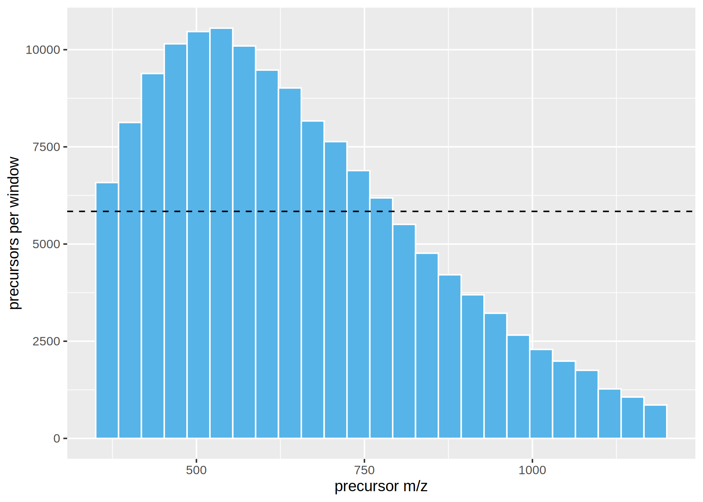
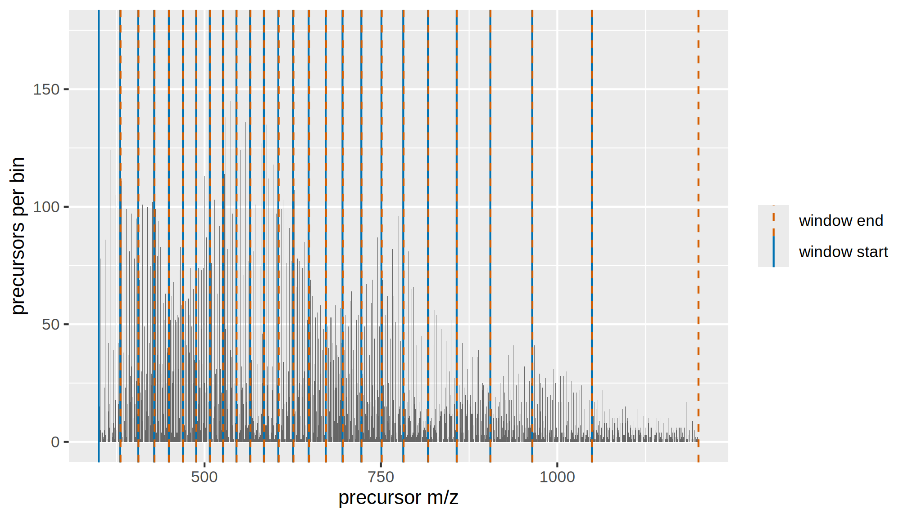
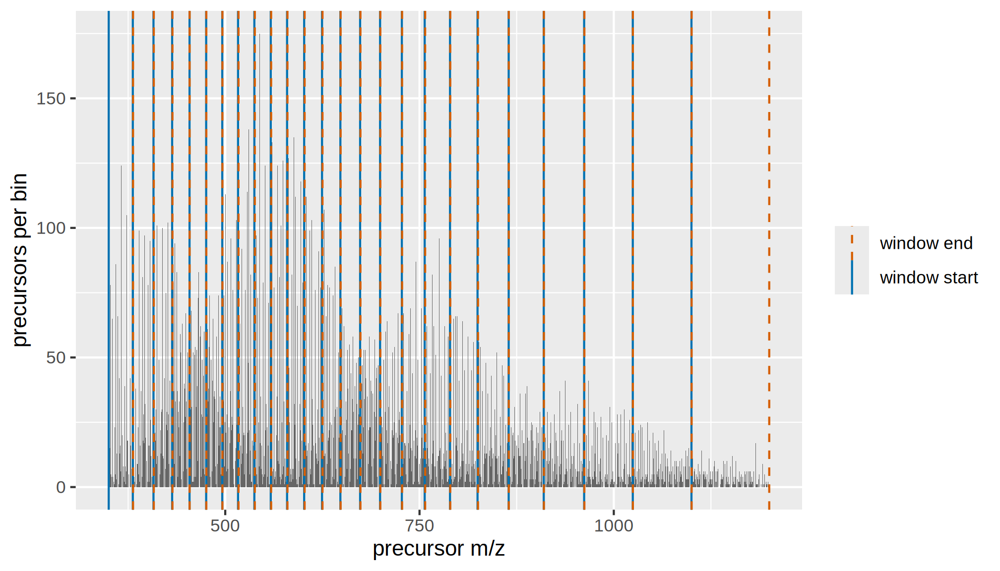
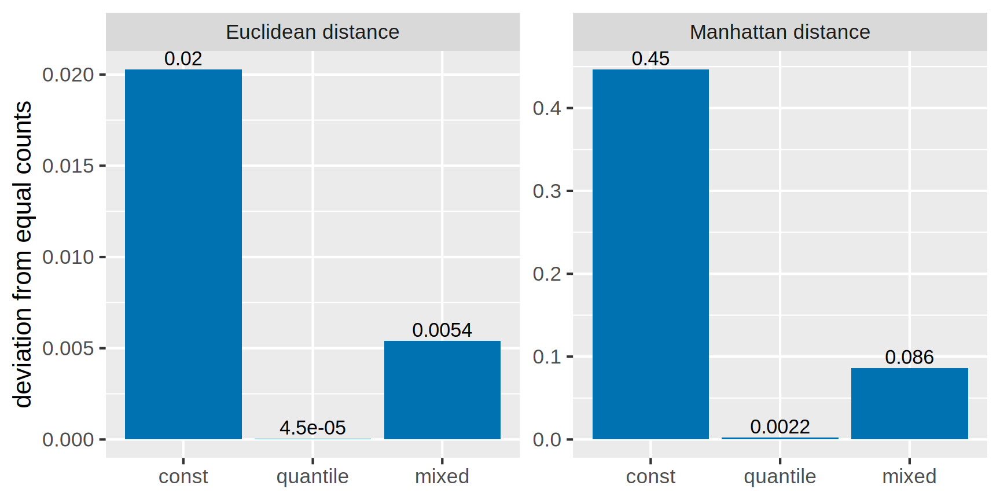

data("masses")
cdsw <- Cdsw(masses, nbins = 25)
cdsw$plot()
Witold E. Wolski, Bernd Roschitzki
November 24, 2026
Function optimizes Extraction windows for DIA/SWATH so we have the same number of precursor per window. This optimization is based on spectral library data or non redundant .blib files (Bibliospec).
| from | to | mid | width | counts |
|---|---|---|---|---|
| 349.63 | 384.62 | 367.125 | 34.99 | 6688 |
| 383.62 | 418.62 | 401.120 | 35.00 | 8357 |
| 417.62 | 452.61 | 435.115 | 34.99 | 9661 |
| 451.61 | 486.61 | 469.110 | 35.00 | 10452 |
| 485.61 | 520.60 | 503.105 | 34.99 | 10725 |
| 519.60 | 554.59 | 537.095 | 34.99 | 10837 |
| 553.59 | 588.59 | 571.090 | 35.00 | 10433 |
| 587.59 | 622.58 | 605.085 | 34.99 | 9750 |
| 621.58 | 656.58 | 639.080 | 35.00 | 9276 |
| 655.58 | 690.57 | 673.075 | 34.99 | 8406 |
| 689.57 | 724.56 | 707.065 | 34.99 | 7848 |
| 723.56 | 758.56 | 741.060 | 35.00 | 7116 |
| 757.56 | 792.55 | 775.055 | 34.99 | 6355 |
| 791.55 | 826.55 | 809.050 | 35.00 | 5666 |
| 825.55 | 860.54 | 843.045 | 34.99 | 4923 |
| 859.54 | 894.53 | 877.035 | 34.99 | 4359 |
| 893.53 | 928.53 | 911.030 | 35.00 | 3807 |
| 927.53 | 962.52 | 945.025 | 34.99 | 3344 |
| 961.52 | 996.52 | 979.020 | 35.00 | 2724 |
| 995.52 | 1030.51 | 1013.015 | 34.99 | 2357 |
| 1029.51 | 1064.50 | 1047.005 | 34.99 | 2042 |
| 1063.50 | 1098.50 | 1081.000 | 35.00 | 1807 |
| 1097.50 | 1132.49 | 1114.995 | 34.99 | 1313 |
| 1131.49 | 1166.49 | 1148.990 | 35.00 | 1088 |
| 1165.49 | 1200.48 | 1182.985 | 34.99 | 881 |
quantileSame number of MS1 precursors in each window
| from | to | mid | width | counts |
|---|---|---|---|---|
| 349.63 | 381.03 | 365.330 | 31.40 | 5956 |
| 380.03 | 406.71 | 393.370 | 26.68 | 6131 |
| 405.71 | 429.24 | 417.475 | 23.53 | 6070 |
| 428.24 | 450.05 | 439.145 | 21.81 | 6086 |
| 449.05 | 470.06 | 459.555 | 21.01 | 6095 |
| 469.06 | 488.80 | 478.930 | 19.74 | 6107 |
| 487.80 | 508.12 | 497.960 | 20.32 | 6173 |
| 507.12 | 526.81 | 516.965 | 19.69 | 6150 |
| 525.81 | 545.79 | 535.800 | 19.98 | 6166 |
| 544.79 | 565.29 | 555.040 | 20.50 | 6123 |
| 564.29 | 584.80 | 574.545 | 20.51 | 6139 |
| 583.80 | 605.12 | 594.460 | 21.32 | 6121 |
| 604.12 | 626.34 | 615.230 | 22.22 | 6113 |
| 625.34 | 648.36 | 636.850 | 23.02 | 6108 |
| 647.36 | 672.34 | 659.850 | 24.98 | 6074 |
| 671.34 | 696.53 | 683.935 | 25.19 | 6082 |
| 695.53 | 722.89 | 709.210 | 27.36 | 6054 |
| 721.89 | 751.40 | 736.645 | 29.51 | 6053 |
| 750.40 | 782.43 | 766.415 | 32.03 | 6023 |
| 781.43 | 817.40 | 799.415 | 35.97 | 5982 |
| 816.40 | 857.96 | 837.180 | 41.56 | 6026 |
| 856.96 | 905.62 | 881.290 | 48.66 | 5971 |
| 904.62 | 964.93 | 934.775 | 60.31 | 5943 |
| 963.93 | 1049.48 | 1006.705 | 85.55 | 5903 |
| 1048.48 | 1200.48 | 1124.480 | 152.00 | 5863 |
Using this method the window start and end is shifted to a mass range with as few MS1 peaks as possible.
| from | to | mid | width | counts |
|---|---|---|---|---|
| 350.05 | 380.95 | 365.50 | 30.9 | 5952 |
| 380.45 | 406.35 | 393.40 | 25.9 | 5932 |
| 406.05 | 429.05 | 417.55 | 23.0 | 5948 |
| 428.65 | 449.65 | 439.15 | 21.0 | 5891 |
| 449.45 | 469.65 | 459.55 | 20.2 | 5872 |
| 469.45 | 488.35 | 478.90 | 18.9 | 5860 |
| 488.15 | 508.05 | 498.10 | 19.9 | 6137 |
| 507.45 | 526.45 | 516.95 | 19.0 | 5892 |
| 526.15 | 545.45 | 535.80 | 19.3 | 6022 |
| 545.15 | 565.05 | 555.10 | 19.9 | 5992 |
| 564.55 | 584.45 | 574.50 | 19.9 | 5976 |
| 584.15 | 605.05 | 594.60 | 20.9 | 6035 |
| 604.55 | 626.05 | 615.30 | 21.5 | 5893 |
| 625.55 | 648.15 | 636.85 | 22.6 | 5987 |
| 647.55 | 672.15 | 659.85 | 24.6 | 6023 |
| 671.75 | 696.15 | 683.95 | 24.4 | 5890 |
| 695.55 | 722.55 | 709.05 | 27.0 | 5981 |
| 722.25 | 751.15 | 736.70 | 28.9 | 5932 |
| 750.65 | 782.15 | 766.40 | 31.5 | 5927 |
| 781.65 | 817.15 | 799.40 | 35.5 | 5944 |
| 816.65 | 857.55 | 837.10 | 40.9 | 5901 |
| 857.35 | 905.25 | 881.30 | 47.9 | 5904 |
| 905.05 | 964.65 | 934.85 | 59.6 | 5881 |
| 964.35 | 1049.15 | 1006.75 | 84.8 | 5864 |
| 1048.95 | 1200.05 | 1124.50 | 151.1 | 5843 |

maxwindow). Windows should not be too large because of optimal collision energy (personal communication by Bernd R.).minwindow).nbins, set in Cdsw()).optimize_windows()).sampling_breaks() mixes the masses with uniformly spread data and takes the quantile breaks of the mixture, with the smallest share of uniform data for which all windows lie within minwindow and maxwindow.
| from | to | mid | width | counts |
|---|---|---|---|---|
| 349.63 | 381.69 | 365.660 | 32.06 | 6098 |
| 380.69 | 408.26 | 394.475 | 27.57 | 6377 |
| 407.26 | 432.22 | 419.740 | 24.96 | 6531 |
| 431.22 | 454.62 | 442.920 | 23.40 | 6588 |
| 453.62 | 476.03 | 464.825 | 22.41 | 6627 |
| 475.03 | 496.74 | 485.885 | 21.71 | 6715 |
| 495.74 | 517.43 | 506.585 | 21.69 | 6717 |
| 516.43 | 538.27 | 527.350 | 21.84 | 6709 |
| 537.27 | 559.27 | 548.270 | 22.00 | 6689 |
| 558.27 | 580.35 | 569.310 | 22.08 | 6720 |
| 579.35 | 602.32 | 590.835 | 22.97 | 6682 |
| 601.32 | 625.27 | 613.295 | 23.95 | 6538 |
| 624.27 | 648.83 | 636.550 | 24.56 | 6568 |
| 647.83 | 674.14 | 660.985 | 26.31 | 6467 |
| 673.14 | 699.88 | 686.510 | 26.74 | 6406 |
| 698.88 | 727.76 | 713.320 | 28.88 | 6319 |
| 726.76 | 757.52 | 742.140 | 30.76 | 6238 |
| 756.52 | 789.86 | 773.190 | 33.34 | 6123 |
| 788.86 | 825.37 | 807.115 | 36.51 | 5932 |
| 824.37 | 865.27 | 844.820 | 40.90 | 5730 |
| 864.27 | 910.48 | 887.375 | 46.21 | 5526 |
| 909.48 | 962.36 | 935.920 | 52.88 | 5195 |
| 961.36 | 1025.02 | 993.190 | 63.66 | 4737 |
| 1024.02 | 1100.47 | 1062.245 | 76.45 | 4191 |
| 1099.47 | 1200.48 | 1149.975 | 101.01 | 3142 |
| from | to | mid | width | counts |
|---|---|---|---|---|
| 350.05 | 381.35 | 365.70 | 31.3 | 6053 |
| 381.05 | 408.05 | 394.55 | 27.0 | 6191 |
| 407.65 | 432.05 | 419.85 | 24.4 | 6448 |
| 431.65 | 454.15 | 442.90 | 22.5 | 6334 |
| 454.05 | 475.65 | 464.85 | 21.6 | 6387 |
| 475.45 | 496.35 | 485.90 | 20.9 | 6504 |
| 496.15 | 517.05 | 506.60 | 20.9 | 6442 |
| 516.45 | 538.05 | 527.25 | 21.6 | 6668 |
| 537.45 | 559.05 | 548.25 | 21.6 | 6542 |
| 558.55 | 580.05 | 569.30 | 21.5 | 6458 |
| 579.55 | 602.15 | 590.85 | 22.6 | 6581 |
| 601.55 | 625.15 | 613.35 | 23.6 | 6480 |
| 624.55 | 648.45 | 636.50 | 23.9 | 6370 |
| 648.15 | 673.95 | 661.05 | 25.8 | 6351 |
| 673.55 | 699.55 | 686.55 | 26.0 | 6201 |
| 699.25 | 727.55 | 713.40 | 28.3 | 6262 |
| 727.25 | 757.25 | 742.25 | 30.0 | 6049 |
| 756.65 | 789.55 | 773.10 | 32.9 | 6081 |
| 789.25 | 825.25 | 807.25 | 36.0 | 5850 |
| 824.65 | 864.85 | 844.75 | 40.2 | 5623 |
| 864.75 | 910.05 | 887.40 | 45.3 | 5389 |
| 909.85 | 962.15 | 936.00 | 52.3 | 5172 |
| 961.85 | 1024.55 | 993.20 | 62.7 | 4665 |
| 1024.45 | 1100.15 | 1062.30 | 75.7 | 4162 |
| 1099.95 | 1200.05 | 1150.00 | 100.1 | 3120 |

We compare the optimal number of MS1 peaks per SWATH window (same in each window) with the numbers obtained by using all of the 3 methods implemented.
errors <- data.frame(
method = factor(rep(c("const", "quantile", "mixed"), 2), levels = c("const", "quantile", "mixed")),
metric = rep(c("Manhattan distance", "Euclidean distance"), each = 3),
value = c(
const_error$score1, quantile_error$score1, mixed_error$score1,
const_error$score2, quantile_error$score2, mixed_error$score2
)
)
ggplot(errors, aes(x = method, y = value)) +
geom_col(fill = "#0072B2") +
geom_text(aes(label = signif(value, 2)), vjust = -0.3, size = 3) +
facet_wrap(~metric, scales = "free_y") +
labs(x = NULL, y = "deviation from equal counts")
The error of the mixed method lies between the two others: it is smaller than that of the equal-width windows, and unlike the quantile windows the mixed windows meet the width limits.
R version 4.6.2 (2026-10-29)
Platform: x86_64-pc-linux-gnu
Running under: Ubuntu 26.04.1 LTS
Matrix products: default
BLAS: /usr/lib/x86_64-linux-gnu/blas/libblas.so.3.12.1
LAPACK: /usr/lib/x86_64-linux-gnu/lapack/liblapack.so.3.12.1; LAPACK version 3.12.0
locale:
[1] LC_CTYPE=C.UTF-8 LC_NUMERIC=C LC_TIME=C.UTF-8
[4] LC_COLLATE=C.UTF-8 LC_MONETARY=C.UTF-8 LC_MESSAGES=C.UTF-8
[7] LC_PAPER=C.UTF-8 LC_NAME=C LC_ADDRESS=C
[10] LC_TELEPHONE=C LC_MEASUREMENT=C.UTF-8 LC_IDENTIFICATION=C
time zone: Etc/UTC
tzcode source: system (glibc)
attached base packages:
[1] stats graphics grDevices datasets utils methods base
other attached packages:
[1] ggplot2_4.0.4 prozor_0.4.0
loaded via a namespace (and not attached):
[1] vctrs_0.7.3 cli_3.6.6 knitr_1.52 rlang_1.3.0
[5] xfun_0.62 otel_0.3.0 generics_0.1.4 S7_1.0.0
[9] jsonlite_2.0.0 labeling_0.4.3 glue_1.8.1 htmltools_0.5.9
[13] scales_1.4.0 rmarkdown_2.32 grid_4.6.2 tibble_3.3.1
[17] evaluate_1.0.5 fastmap_1.2.0 yaml_2.3.12 lifecycle_1.0.5
[21] compiler_4.6.2 dplyr_1.2.1 RColorBrewer_1.1-3 pkgconfig_2.0.3
[25] farver_2.1.2 lattice_0.23-1 digest_0.6.39 R6_2.6.1
[29] tidyselect_1.2.1 pillar_1.11.1 magrittr_2.0.5 Matrix_1.7-6
[33] withr_3.0.3 tools_4.6.2 gtable_0.3.6 bspm_0.6.0